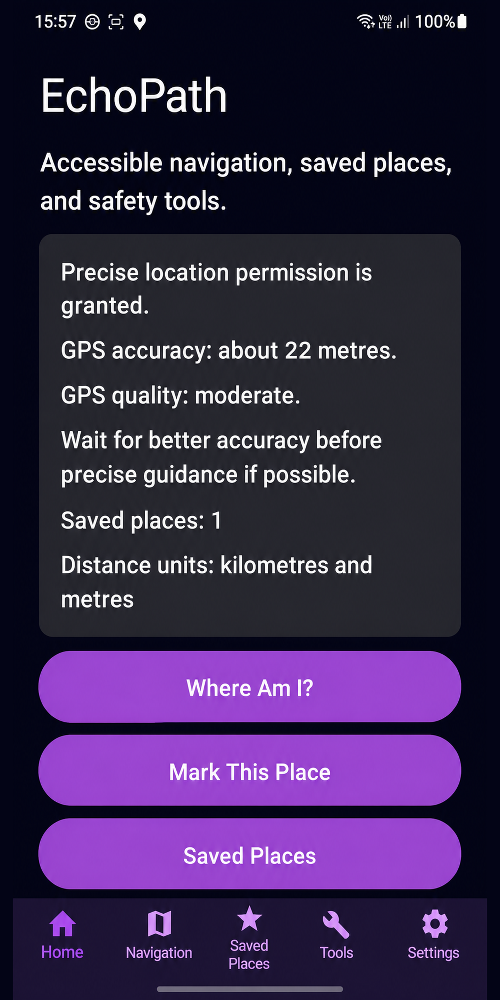
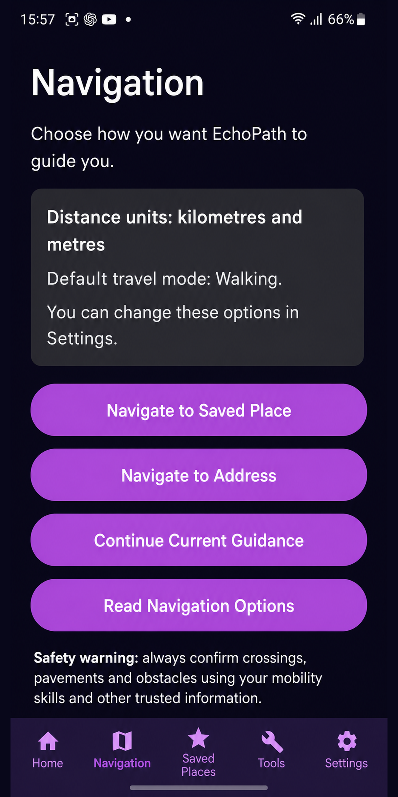
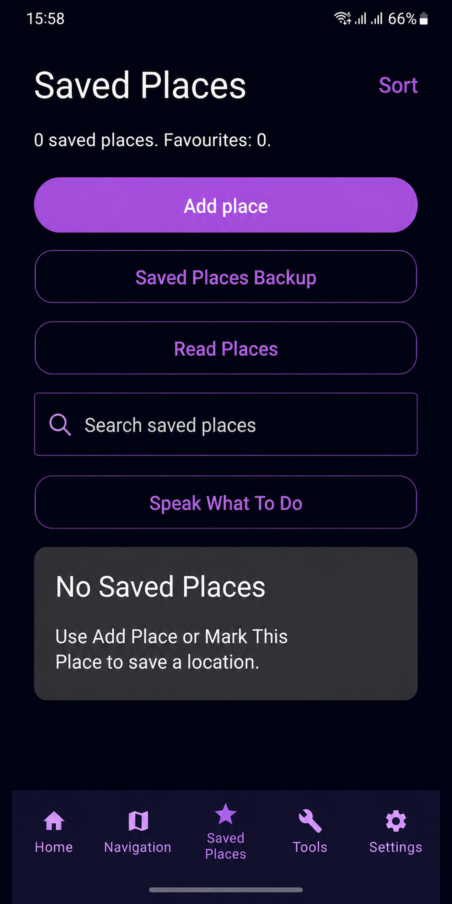
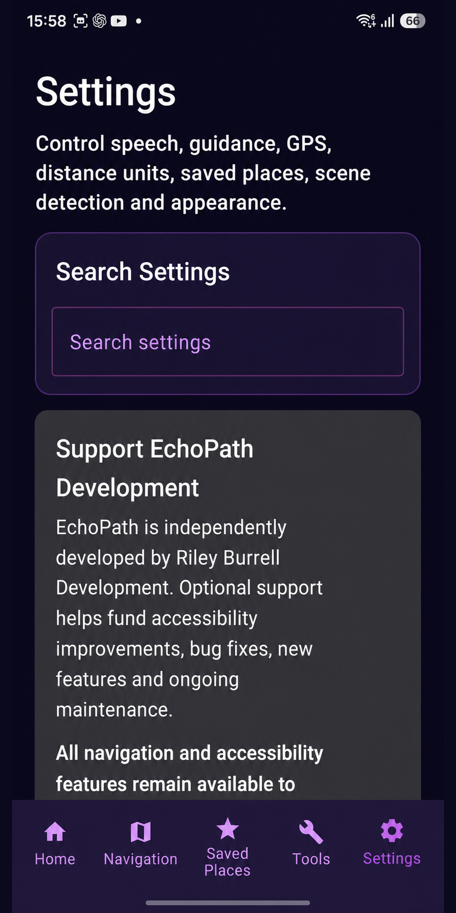

Home
The Home screen provides a starting point for the main EchoPath actions and keeps frequently used functions easy to reach.
EchoPath for Android
The Android version is in active development as a native Android app. It follows the same accessibility-first mission as EchoPath on iPhone while using platform-appropriate controls, navigation patterns and technologies.

What exists today
The screenshots supplied from the current Android project show a real in-development interface rather than a concept. Current areas include Home, Navigation, Saved Places, Transport Guidance, Tools and Settings.
The Home screen provides a starting point for the main EchoPath actions and keeps frequently used functions easy to reach.
The Navigation area is being developed around accessible destination and journey workflows while respecting Android interaction conventions.
Saved Places is part of the Android project so important destinations can be kept available for quicker access.
The Android build includes a dedicated transport-guidance area as work continues on journey support and movement-aware information.
The Tools area provides a home for supporting EchoPath functions beyond the main navigation flow.
Settings is being developed so accessibility and app behaviour can be adjusted without forcing every user into the same configuration.
Development approach
The Android app is intended to share EchoPath’s core goals while still feeling like an Android application. Features will be adapted to the capabilities and accessibility APIs available on Android rather than copied blindly from iOS.
That also means the iOS and Android feature sets may not always move at exactly the same speed. A feature that is mature on iPhone may still be under investigation or implementation on Android.
Accessibility on Android
The Android version is being developed with accessible labels, clear structure, appropriate touch targets and screen-reader-friendly interaction in mind. Platform testing will continue as the project moves toward broader availability.
Android conventions are used where they provide a clearer and more predictable experience for Android users.
Settings are intended to expose individual accessibility and behaviour choices rather than hiding them behind a single global mode.
Development screenshots show the current project, but accessibility and reliability still need continued real-device testing before public release.
The long-term goal is a recognisable EchoPath experience across both platforms while allowing each platform to use the implementation that suits it best.
All supplied Android screenshots
The promotional banner above and all six app screenshots supplied for the Android project are included on this page.






Availability
The page is a development preview. The Play Store banner is being used as project artwork and does not mean the app is currently available to install from Google Play.
Read the FAQ →